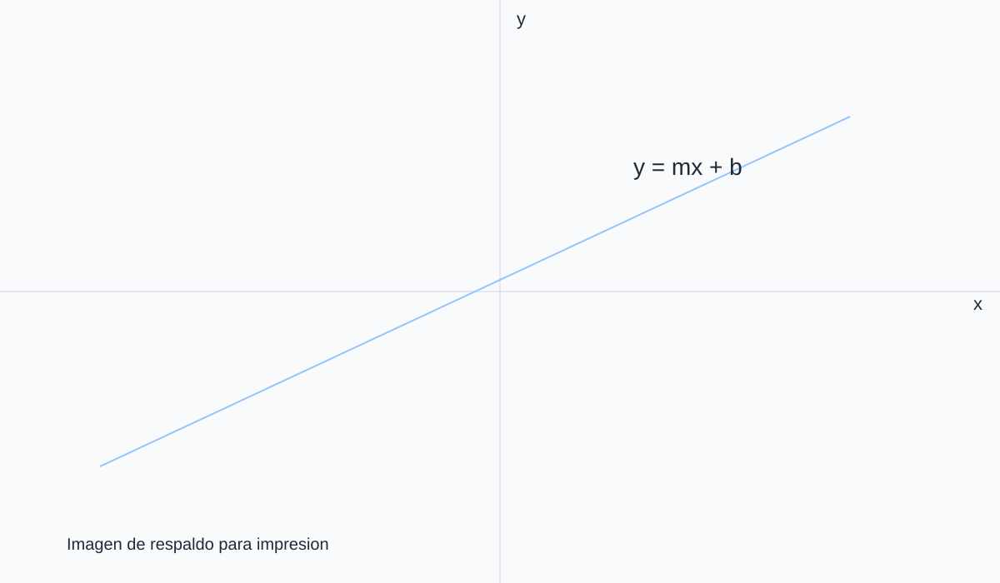

Ejemplo autocontenido para reutilizar en nuevos módulos
Módulo Demo Portable
Esta lección resume los patrones recomendados para contenido portable: bloques matemáticos, fragmentos Reveal, columnas, taller y un applet GeoGebra con imagen alternativa para impresión.
La idea es que quien edite una clase pueda partir desde este archivo y reemplazar contenido, sin tener que redescubrir la estructura HTML base.
Una función afín tiene la forma \(f(x)=mx+b\), con \(m,b\in\mathbb{R}\). En particular, si \(m=0\), se obtiene una función constante.
<h1 class="title"> en la portada.<section> independientes.definition, example, solution y taller..ggb.Sean \(\ell_1\) y \(\ell_2\) dos rectas con pendientes \(m_1\) y \(m_2\). Entonces:
Si \(a,b,c\in\mathbb{R}\) con \(a\neq 0\), entonces las soluciones de \(ax^2+bx+c=0\) son
\[x=\dfrac{-b\pm\sqrt{b^2-4ac}}{2a}.\]
Determine la ecuacion de la recta que pasa por \((1,2)\) y \((3,6)\).
La pendiente es \(m=\dfrac{6-2}{3-1}=2\). Luego, \(y-2=2(x-1)\), es decir, \(y=2x\).
section corresponde a una diapositiva.
Recordatorio: la intersección con el eje \(y\) de una recta \(y=mx+b\) es \((0,b)\).
Si \(m>0\), la recta es creciente; si \(m<0\), es decreciente.
Encuentre los valores de \(k\) para que la recta \(y=kx+1\) pase por el punto \((2,5)\).
El bloque taller sirve para agrupar actividades. Si existe una solución PDF separada, conviene dejarla en la estructura habitual del módulo para que el menú la asocie automáticamente.
La integración recomendada usa ggb-wrapper, un contenedor con el elemento del applet y una imagen ggb-print-img para el modo de impresión.
Visualización dinámica de la recta \(y=mx+b\) en un applet interactivo.

Si necesitas crear una nueva clase portable, usa esta como plantilla base y reemplaza el contenido manteniendo la estructura de secciones, clases CSS y rutas relativas.